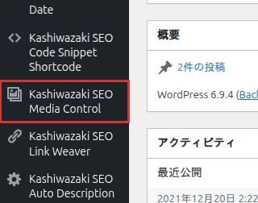

インストール・初期設定
Kashiwazaki SEO Media Control のインストール方法と、メディア管理機能を利用するための基本設定を説明します。
インストール手順
1
WordPress管理画面から プラグイン > 新規追加 に移動し、「Kashiwazaki SEO Media Control」を検索します。または、プラグインのZIPファイルを プラグイン > 新規追加 > プラグインのアップロード からアップロードします。
2
「今すぐインストール」をクリックし、インストール完了後「有効化」をクリックします。
3
管理画面の左メニューに「Kashiwazaki SEO Media Control」が追加されます。クリックしてメディア管理画面を開きます。

ヒント
有効化直後から、メディアライブラリの全ファイルに所有者情報が表示されるようになります。既存のメディアファイルの所有者情報も自動的に表示されます。
管理画面の確認
プラグインの有効化後、メディア管理画面の構成要素を確認します。
画面構成
| 要素 | 説明 |
|---|---|
| メディア一覧 | メディアライブラリの全ファイルを一覧表示します。ファイル名、サムネイル、所有者情報が表示されます。 |
| 所有者カラム | 各メディアファイルの現在の所有者（アップロードしたユーザー）を表示します。 |
| フィルターバー | 所有者・ユーザー別にメディアを絞り込むためのドロップダウンフィルターです。 |
| 一括操作メニュー | 選択した複数のメディアファイルに対して一括所有者変更を実行するメニューです。 |
基本設定
ユーザー権限
メディア管理機能にアクセスできるユーザーの権限レベルを確認します。
| 権限 | 説明 |
|---|---|
| 管理者 | 全メディアファイルの閲覧・所有者変更・一括操作が可能です。 |
| 編集者 | メディアの閲覧が可能です。所有者変更は管理者のみが実行できます。 |
注意
所有者変更は WordPress の wp_posts テーブルの post_author フィールドを直接変更します。変更は即座に反映され、元に戻すには再度所有者変更を行う必要があります。
管理画面アセット
本プラグインは管理画面でのみCSS（6.3KB）とJavaScript（19KB）を読み込みます。フロントエンドでは一切のアセットを読み込まないため、サイトの表示速度に影響を与えません。
補足
本プラグインはフロントエンド出力（JSON-LD、メタタグ）を一切行いません。管理画面でのみ動作するため、サイトの表示速度やCore Web Vitalsに影響を与えません。